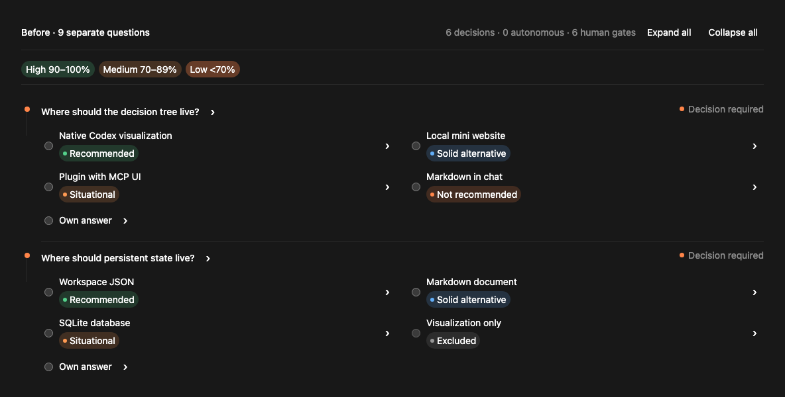
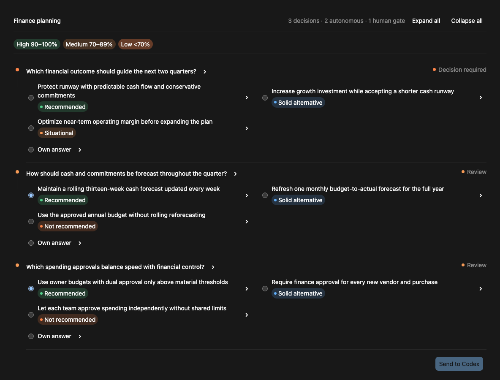
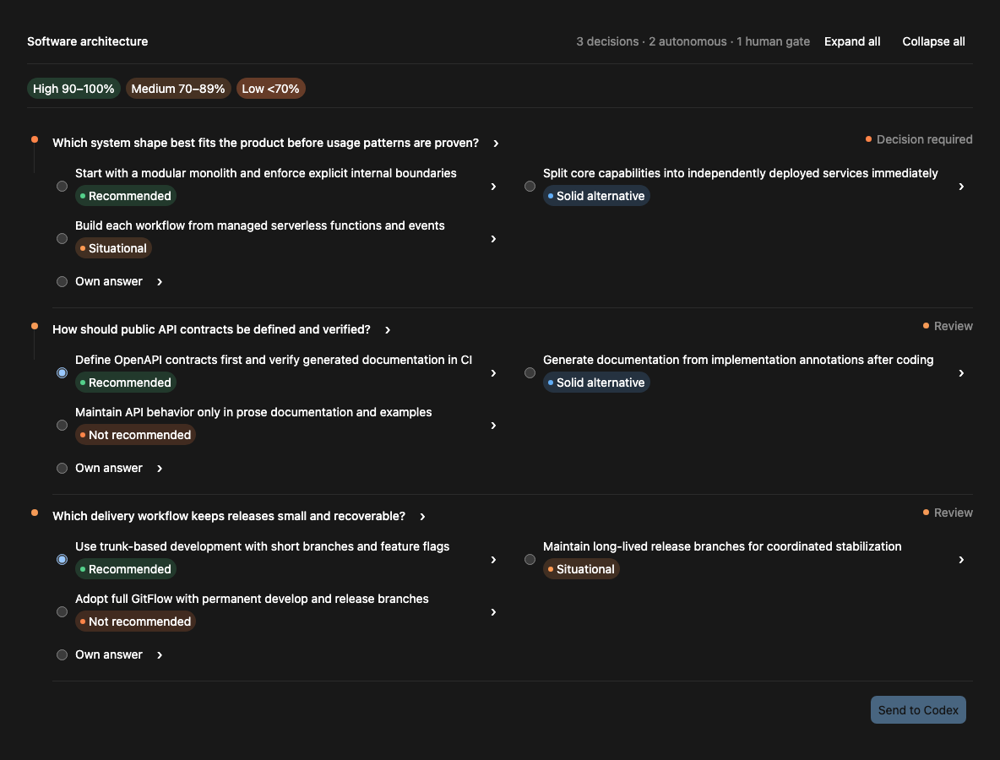
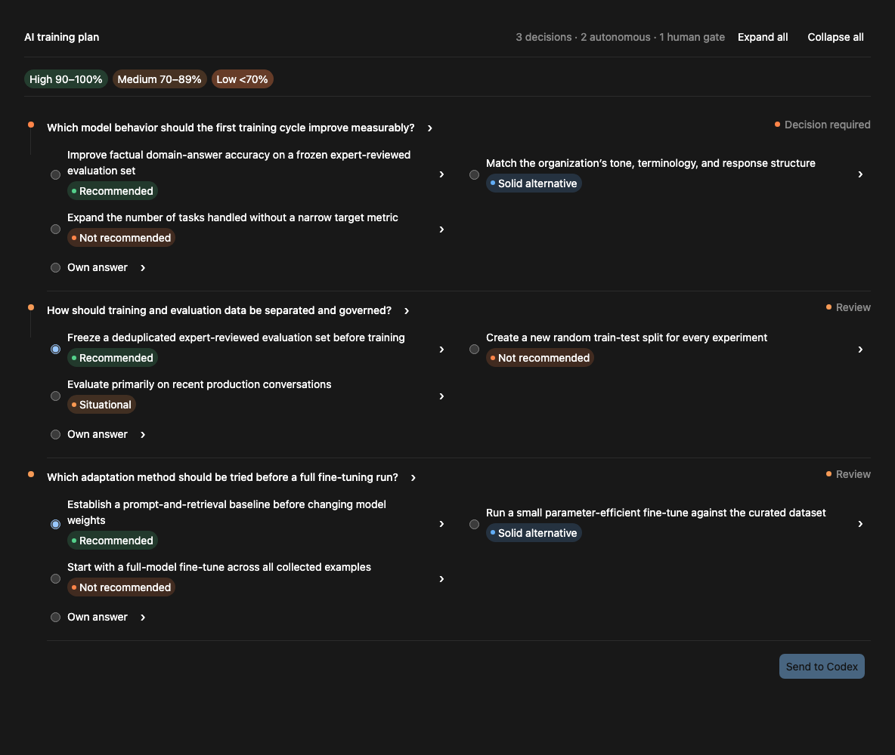
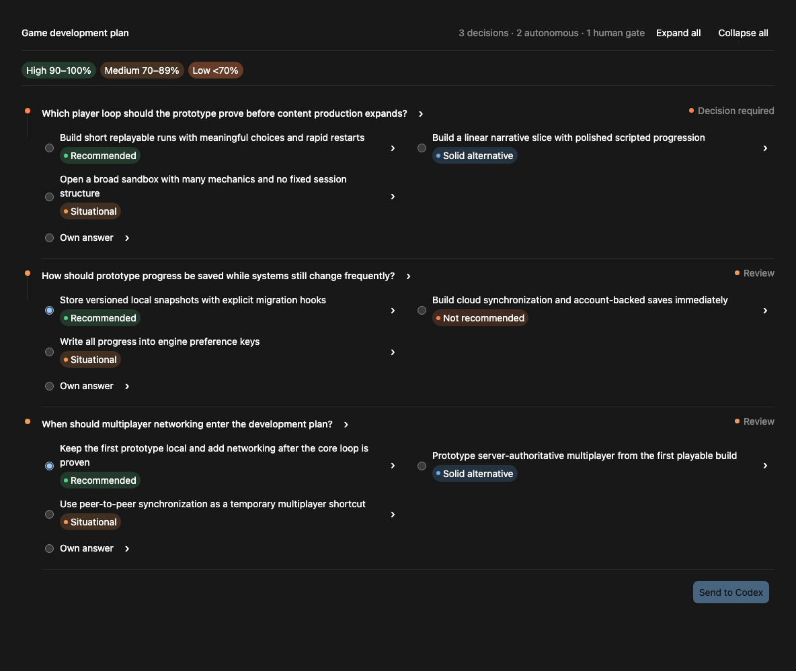
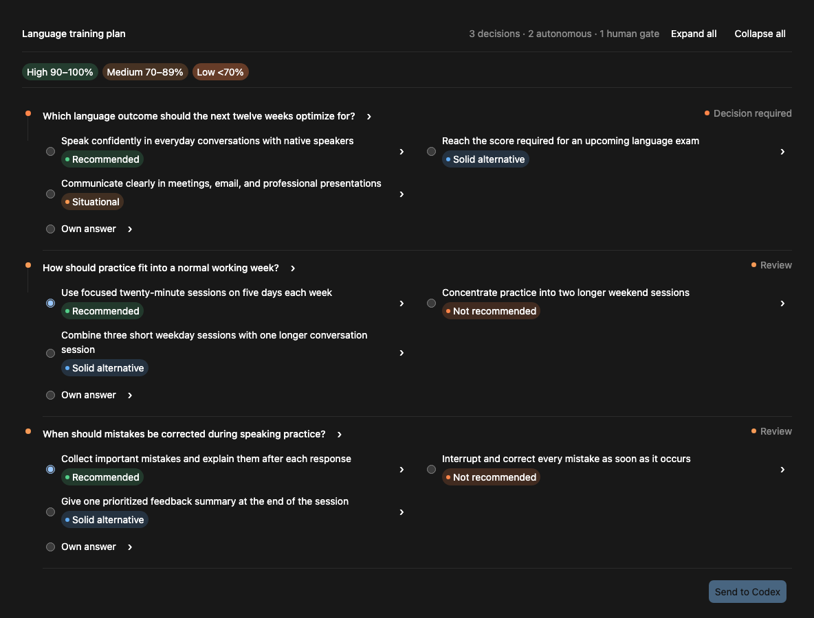
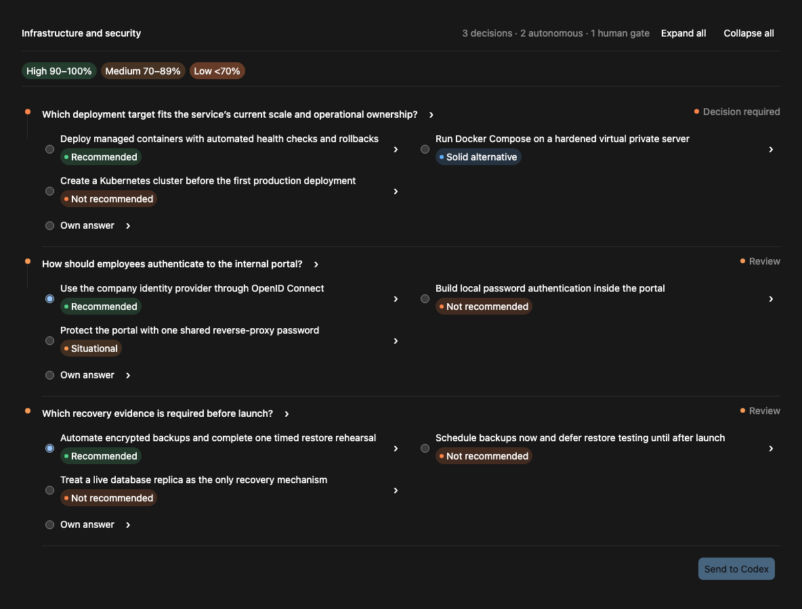

Autonomous decision workflow for Codex
Let the agent cook.
Let Him Grill resolves safe, reversible planning decisions on its own—and stops when your judgment actually changes the outcome.
npx skills add pengusto/let-him-grill -g -a codex -y
See the grill.
Six decisions evaluated. Five resolved autonomously. One human gate. Change an earlier choice and only its dependent path gets reassessed.

Bring a real decision.
Start with a concrete goal and name the boundaries that must stay human. These six prompts work across product, technical, and personal planning.
Finance
Use $let-him-grill to choose a budgeting and reporting approach for our SaaS business. Stop before compliance or spending decisions.
Financial priority · forecast cadence · spending approvals
{kind=link}

Software architecture
Use $let-him-grill to decide whether this B2B product should start as a modular monolith or separate services. Stop at material scaling or ownership trade-offs.
System shape · API contracts · delivery workflow
{kind=link}

AI training
Use $let-him-grill to plan a domain-model training workflow. Stop at privacy, licensing, or budget gates.
Measurable objective · evaluation-data governance · adaptation method
{kind=link}

Game development
Use $let-him-grill to shape the save system and multiplayer scope for this game prototype. Stop where platform, networking, or player-experience goals differ.
Core player loop · save format · multiplayer timing
{kind=link}

Language training
Use $let-him-grill to create a twelve-week language training plan. Continue until motivation, certification, or professional priorities need my judgment.
Learning outcome · weekly practice rhythm · correction timing
{kind=link}

Infrastructure & security
Use $let-him-grill to choose deployment, authentication, backups, and observability for this internal portal. Stop before accepting security exposure or recurring cost.
Deployment target · employee authentication · recovery evidence
{kind=link}

Grill only what matters.
Same evidence-first discipline as Grill with Docs, with fewer interruptions and an explicit handoff before implementation.
Read before asking
Codex researches project code, documentation, terminology, and prior decisions first.
Keep moving
Low-risk reversible choices get a reasoned recommendation and are resolved automatically.
Your call when it matters
Product intent, architecture, security, cost, and hard-to-reverse choices stay human.
Ready to cook?
Install globally, start a new Codex task, then invoke $let-him-grill.